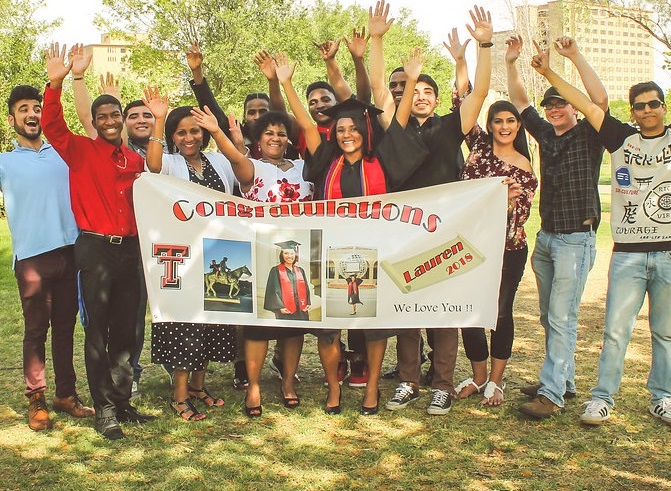
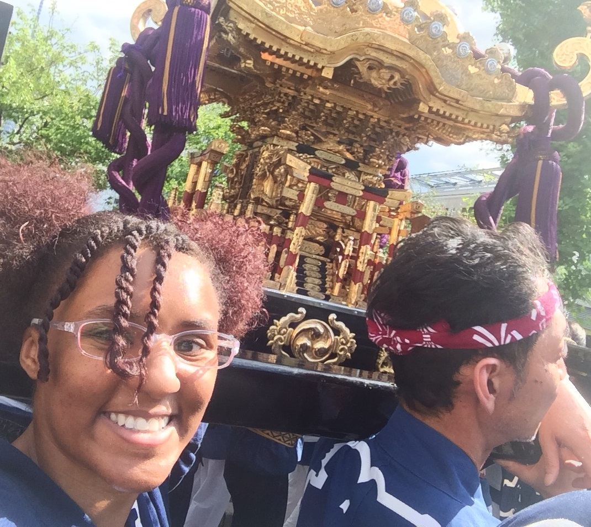
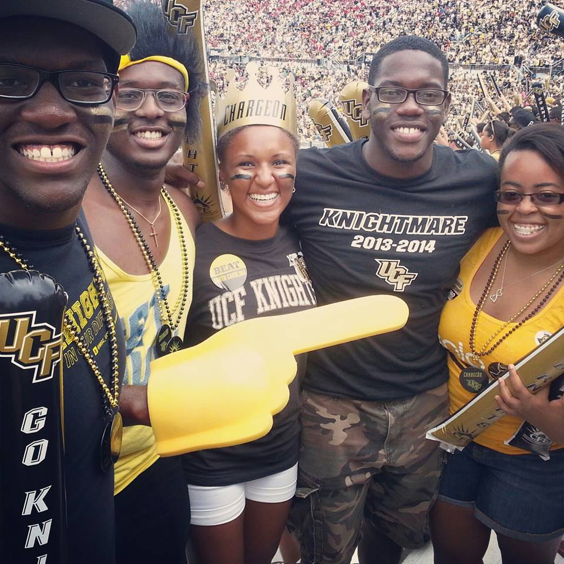
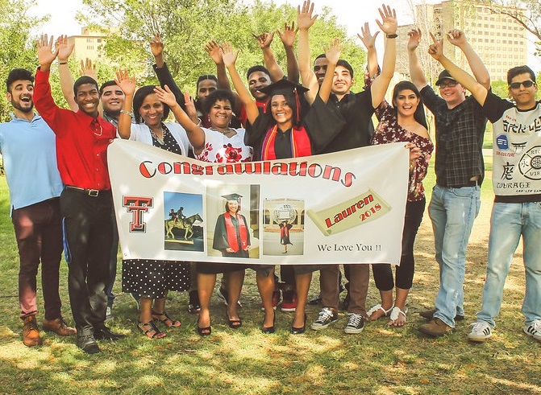
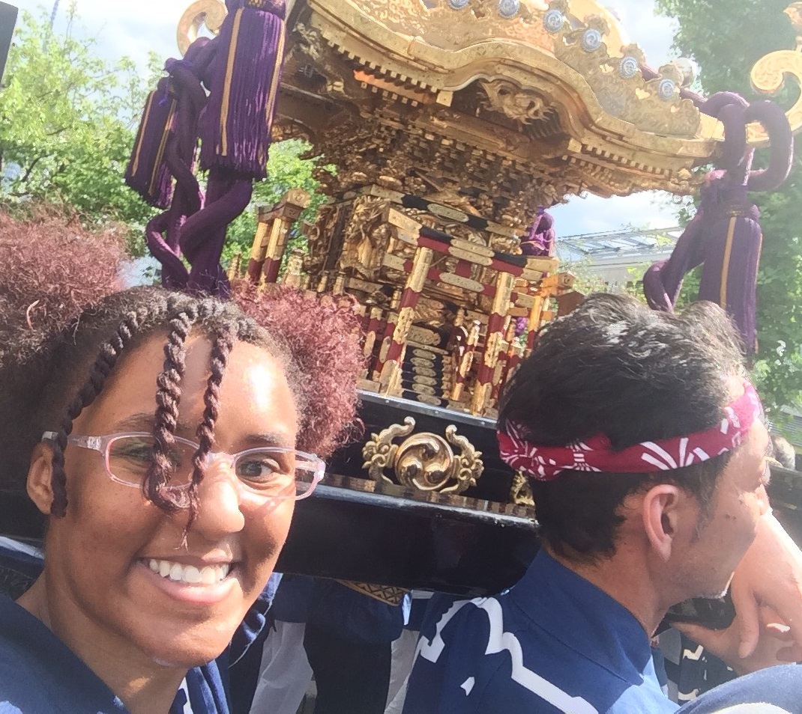
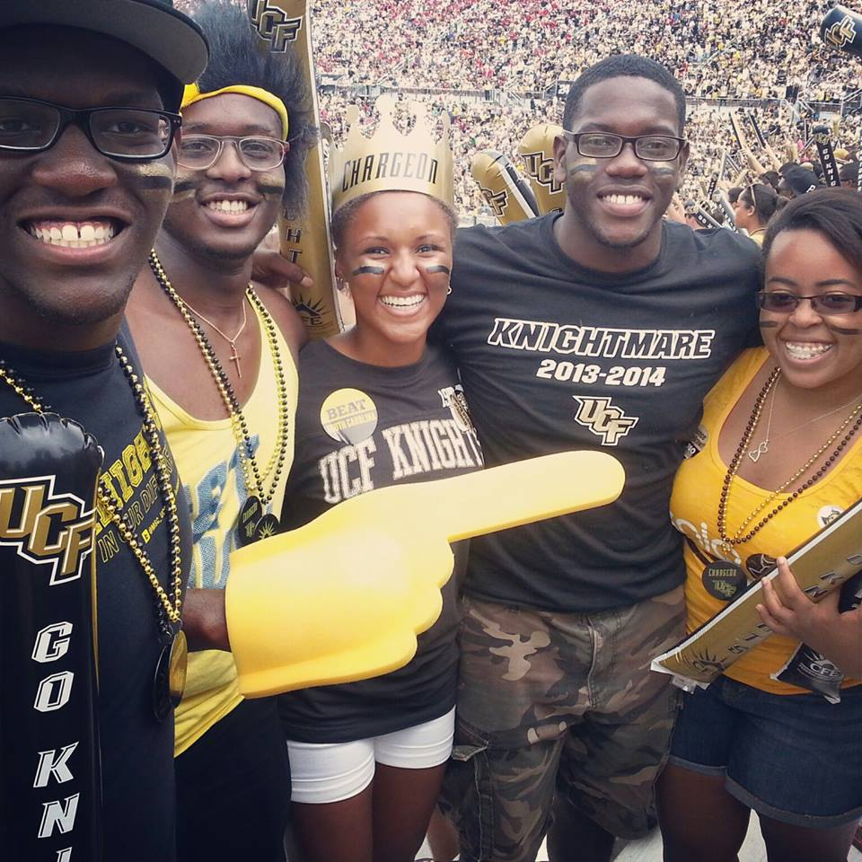

About Me
 





About Me
My name is Lauren Finley, and I am a software developer. I recently graduated from Texas Tech University on May 19th, 2018 with a Bachelor of Science degree in Computer Science and minors in Mathematics and Japanese. I am currently seeking full-time employment opportunities both within the U.S. and abroad as an entry level software engineer.
Bio
I grew up as a military child alongside two brothers. Both of my parents were in the U.S. Army, and as a result our family moved every couple of years. In addition to the U.S., I have lived in Germany, South Korea, and Belgium, and have traveled to several other countries such as China, Italy, Austria, England, France, Spain, and Japan. I got to experience the world at such a young age, and those experiences made me love to meet new people, visit new places, and try new things.
Upon graduating from high school, I attended the University of Central Florida (UCF) for two years. Originally, I declared my major in biomedical sciences- but switched to computer science after my first year of college to pursue my passion. I joined the Association for Computing Machinery (ACM) at UCF, and I competed in my first programming competition hosted by Deloitte. It was a great experience, and it inspired me to want to program on a more competitive level. The fall of 2015, I transferred to Texas Tech University (TTU) to be closer to family and to take advantage of their study abroad programs. Since transferring to TTU, I have joined several computer science and engineering related organizations such as ACM @ TTU, Software Development Club, and the Society of Women Engineers. After completing my first year at TTU, I spent an entire academic year in Tokyo, Japan studying the Japanese language and culture. I recently completed my final semester of education at the undergraduate level, and I couldn't be more thrilled to be starting the next chapter of my life.
Goals
The following are goals that I would like to accomplish within the next five years:
- Become fluent in Japanese
- Become certified in at least one programming language
- Become certified in at least one developer skill set that is not a programming language
- Travel to at least three new countries
- Read 100 books
Honors and Awards
Institutional Honors. I graduated with honors cum laude from Texas Tech University.
Boren Scholarship. In April of 2016 I was selected as a recipient of the Boren Scholarship award for the amount of $20,000. This highly selective and prestigious award allowed me to study abroad in Japan for an entire academic year. More information can be found here.
Pegasus Gold Scholarship. The Pegasus Gold Scholarship is a four year academic scholarship offered by UCF to incoming freshman who excelled academically in high school.